Have you ever wondered what Stalingrad would look like after its battle? How about Leningrad, Berlin, or even Hiroshima, or Nagasaki? Unfortunately for you, there is no satellite imagery from WW2, but alternatives are aplenty. Across the globe, small gashes and bruises pollute the earth, once grand coliseums for the spectacle of violence. Some of them are new mosquito bite marks, while others are old and open wounds. To view any one of these, one must simply open up Google Earth/Maps.
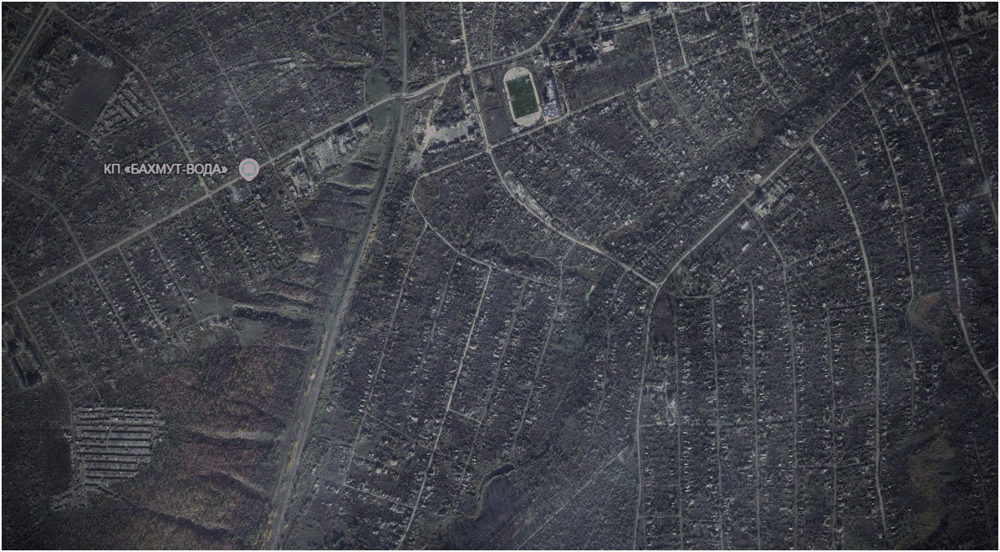
Today, the largest, freshest, and most most searing wounds on mother earth, comes from the breadbasket of Europe; Ukraine . The war, ongoing in some form since Russia’s
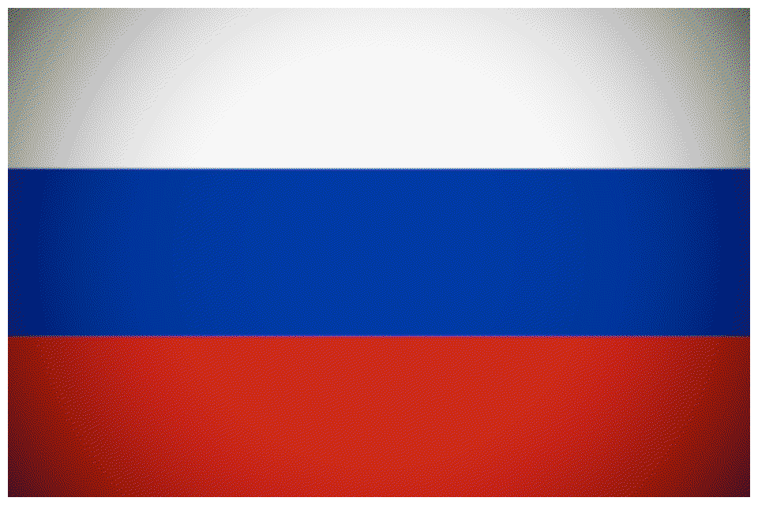
invasion of Crimea in 2014, has levelled or severely damaged dozens of villages, towns, small cities, and even some big cities. Even as the front has been pushed dozens of miles in certain regions, Russia has not pushed for the reconstruction of any of them, for fairly obvious reasons. In Bakhmut, once a small coal mine – but now a household name across the world – large parts of it are totally destroyed, levelled in the brutal urban battle that took place from November 2022 to May of 2023. But the damage is uneven. Russia’s conquest of the eastern bank was much faster and generally less of a slog than on the west, where Russian forces attempted to fight the Ukrainians on three axes: north, center, and south. As a result, the western and northern parts of the city are totally featureless and destroyed compared to some parts of the east. Additionally, you can see the trenches built up to the east of Bakhmut, where Russian forces slowly nudged towards the city at large cost in trench warfare often called "Ukraine's Verdun". Today, the front has barely nudged past Bakhmut. Fighting started in early 2024 in nearby Chasiv Yar, continuing to this day, resulting in that city similarly turning into rubble and foundations.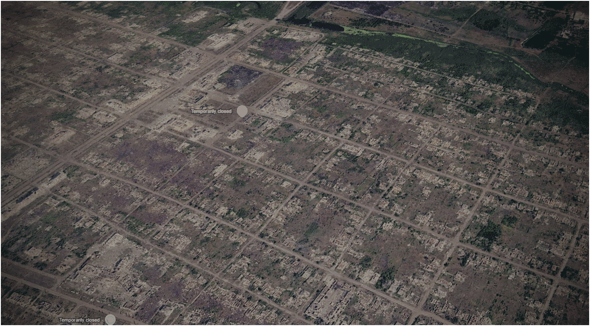
Elsewhere in Ukraine , the suburb of Maryinka (just to the left of Donetsk city) may be the most devastated and razed settlement in the entire war. Maryinka laid on the frontlines between Ukraine and Russian separatists
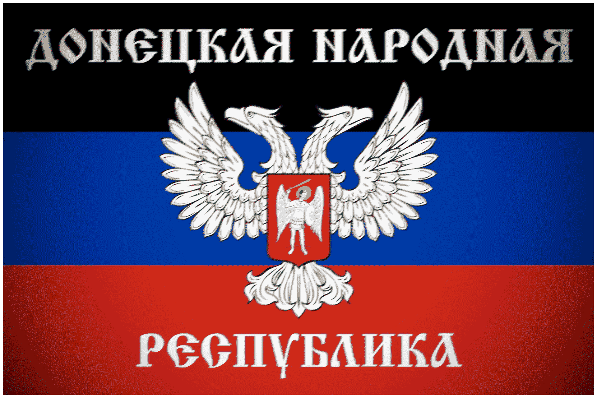
(and later Russian forces ) for nearly a decade, from 2014 to 2024. In late 2023, the Russians finally achieved their final breakthrough, cutting through the rest of the city and capturing it from Ukrainian forces . Today, satellite imagery depicts a town that becomes less and less featureless the farther to the west you go.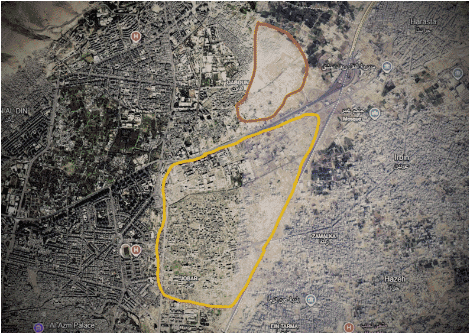
But one of the most striking results of total war comes from Syria
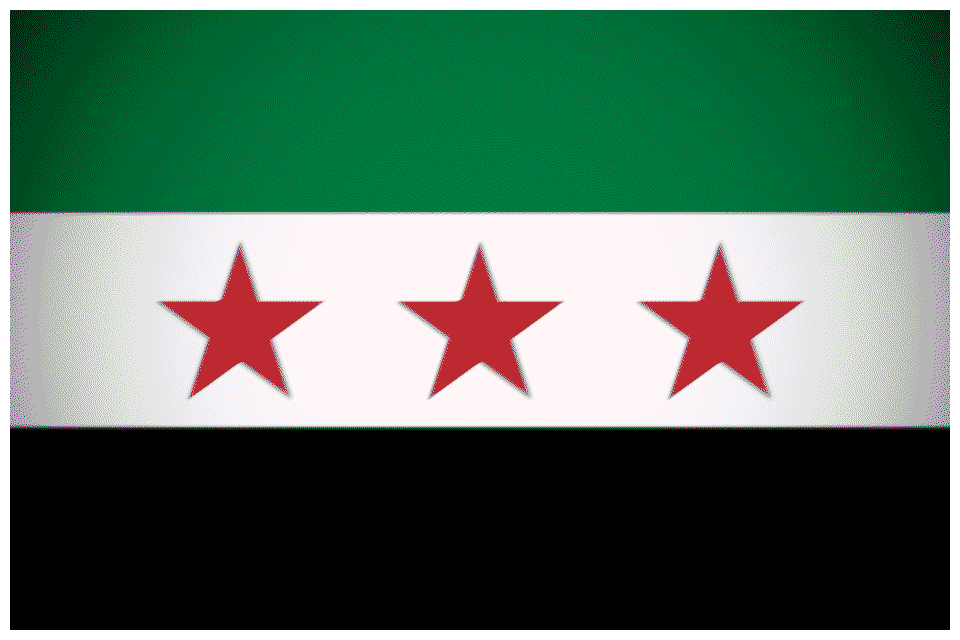
. Two of the largest battles of the 21st century took place in Aleppo and Damascus, the economic and political capital of Syria respectively. While most of the city of Damascus remains either intact or moderately damaged, the neighborhoods of Jobar and Qaboun suffered the brunt of the Assad
We can see through satellite image history that the vague structure of Jobar holds, even if severely damaged, up until 2017, when regime  forces, now backed up by Russia , attempted to break through and end rebel presence in the neighborhood. Unfortunately for them, the group in control of Jobar, Faylaq al-Rahman
forces, now backed up by Russia , attempted to break through and end rebel presence in the neighborhood. Unfortunately for them, the group in control of Jobar, Faylaq al-Rahman
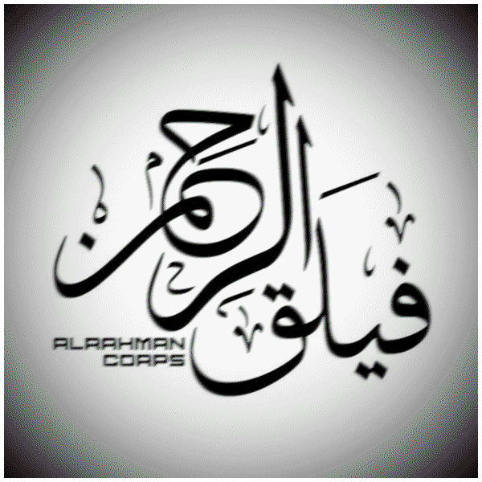
, took the Assadist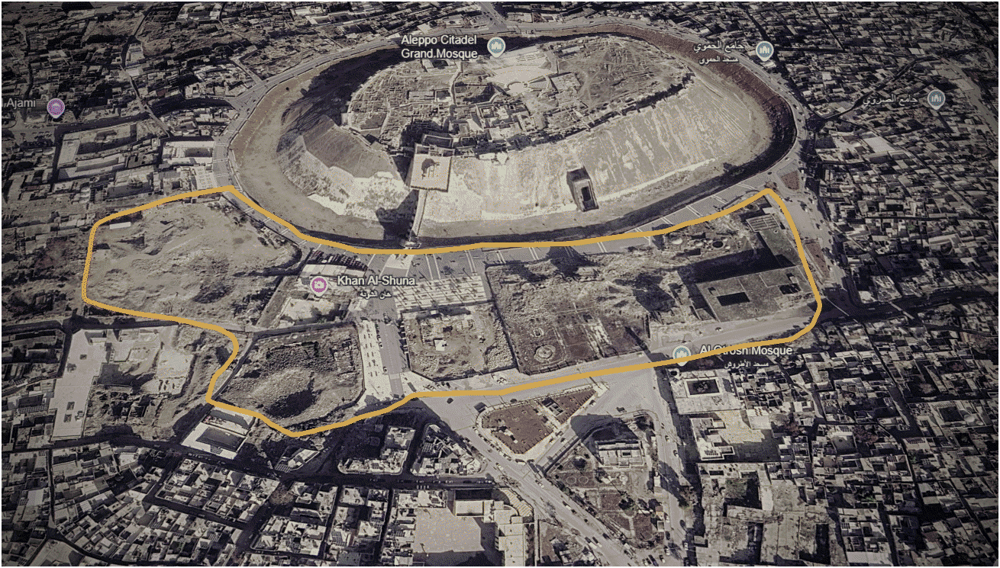
On the other side of Syria , ten years after one of the largest battles of the 21st century finally concluded, you can still see its scars. Unlike Gaza City, Bakhmut, or Jobar, large numbers of civilians remained in Aleppo, especially in the rebel-held eastern neighborhoods, where hundreds of thousands of civilians were besieged for a period of time in late 2016. In the east, the most important and most fortified stronghold controlled by Assad’s forces  was the Aleppo Citadel, an elevated medieval palace constructed hundreds of years ago. The citadel and the numerous buildings around it, such as the Sultaniyah mosque, remain damaged since those fateful days. In other parts of the city, like Ramouseh, Apartments district 1070, the Aleppo stadium, and the Great Mosque of Aleppo, damage has mostly been repaired in the years since the siege, making it far less visible on satellite imagery.
was the Aleppo Citadel, an elevated medieval palace constructed hundreds of years ago. The citadel and the numerous buildings around it, such as the Sultaniyah mosque, remain damaged since those fateful days. In other parts of the city, like Ramouseh, Apartments district 1070, the Aleppo stadium, and the Great Mosque of Aleppo, damage has mostly been repaired in the years since the siege, making it far less visible on satellite imagery.
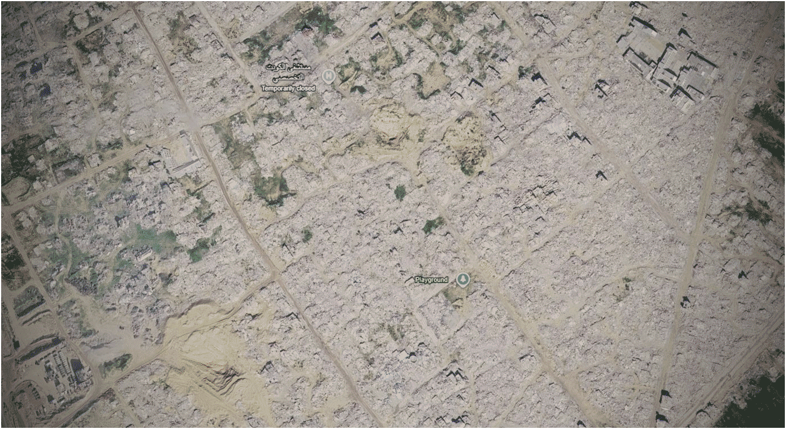
After October 7th, 2023, Israeli forces launched a sweeping ground and air offensive against Hamas in Gaza
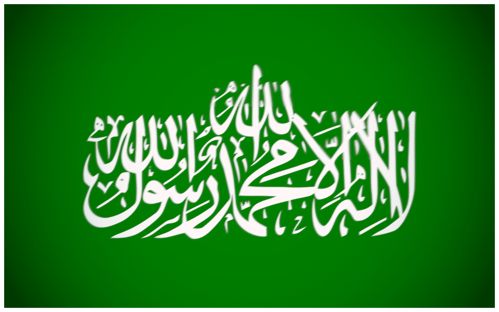
in actions that would redefine the Middle East forever. During this offensive, the IDF has purposefully and systematically razed towns, neighborhoods, and even large cities within the Gaza Strip. Unlike in Syria or Ukraine , where heavy fighting and heavy handed tactics by Russian and Russian-backed forces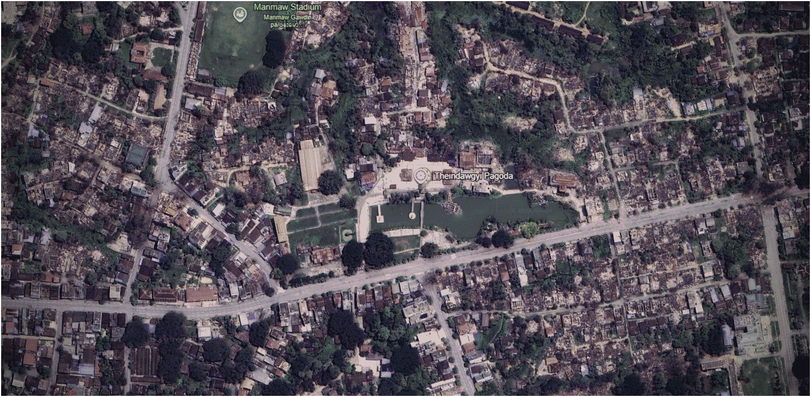
While the civil war in Myanmar
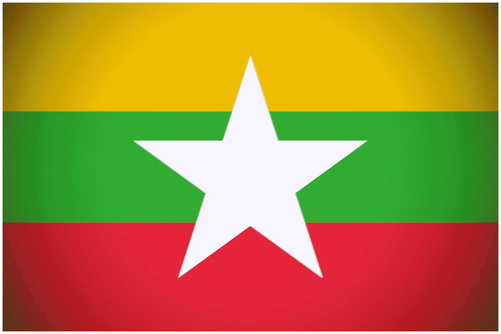
is perceived to hold more guerilla and less positional fighting, it could not be farther from the truth in Bhamo, Kachin state. Since the start of the siege in mid 2024, the Kachin Independence Army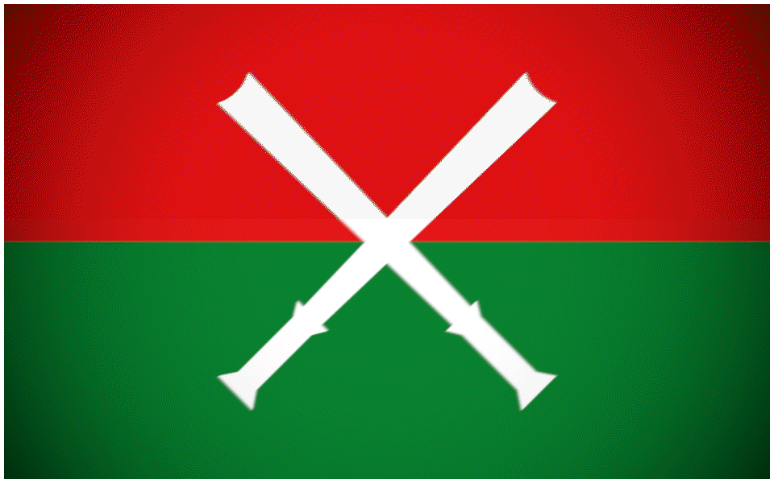
, part of the country’s opposition , has engaged in brutal urban combat with the Burmese military (Tatmadaw) . As frontlines have solidified around Highway 31, numerous neighborhoods around the road have been totally destroyed or severely damaged. Since the battle remains still very much ongoing, we have yet to see the true and final extent of the carnage in Bhamo.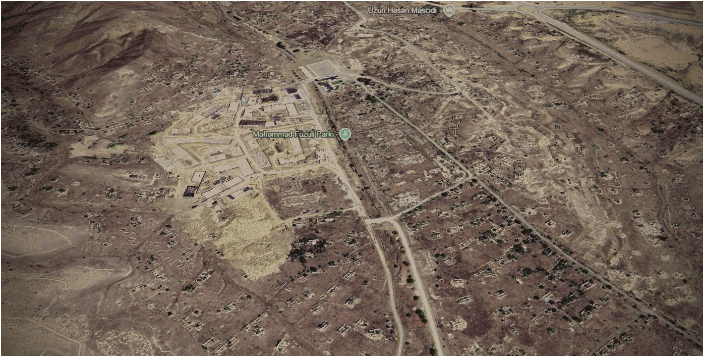
While the region of Artsakh
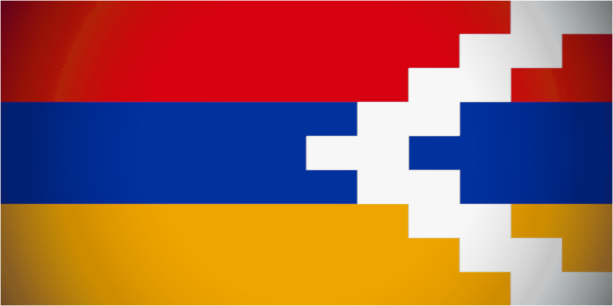
, also known as Nagorno Karabakh, never suffered the same dense and sustained urban warfare that places in Ukraine , Syria , Palestine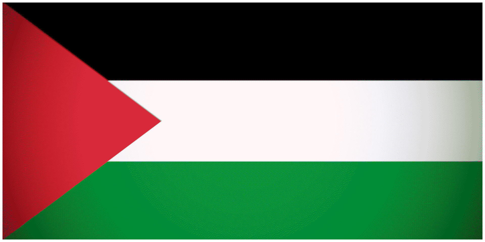
, or even Myanmar have, we can instead see a facet of the aftermath of war: settlement. Instead of fighting, many of the Azeri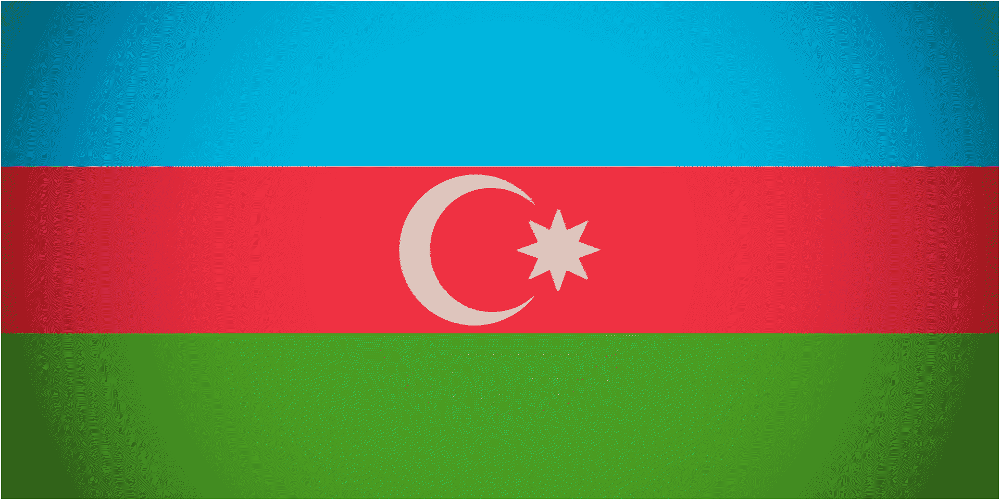
and Armenian towns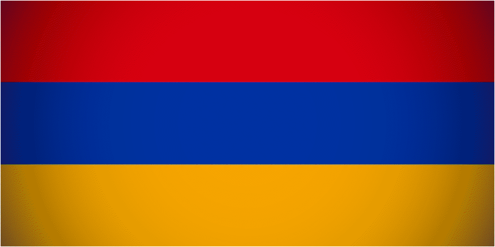
in this region were abandoned due to the fear of ethnic, even genocidal, retaliation. For nearly three decades, these towns and cities lay abandoned, left to rot to such an extent that only the foundations are still up on many of them. But change is coming. In September of 2023, Artsakh forces were crushed in a days long offensive by Azerbaijan , leading to the demise of the breakaway state. After their victory, 100,000 ethnically Armenian people left the region, rapidly, fearing the same retaliation that their parents and the Azeris had felt in the 90s. In the years since, Azerbaijan has launched a program of settlement and construction across Nagorno Karabakh, resulting in many towns having bright and colorful houses juxtaposed with and surrounded by a brown, featureless blob of empty foundations. Some of the towns built over were former Armenian towns, structures, and churches, while others were Azeri ones.While there are numerous other examples, both in the countries mentioned above and those not, these were the most severe and searing examples of war and state based damage anywhere in the world. But, unfortunately, Google Earth does not have constantly updated imagery. Instead, Google relies on periodic snapshots, some taken years apart. For this reason, some large battles occurring across the world today may not show the full extent of their destruction. For example, al-Fasher, a Sudanese city that was torched by the RSF
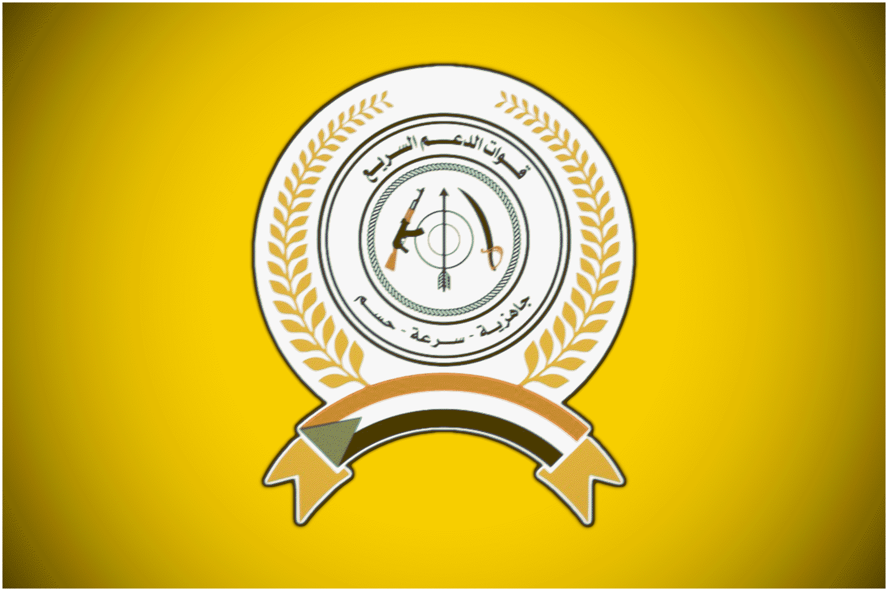
in October of 2025, and Pokrovsk, a Ukrainian city that was the host of a large battle for several months in late 2025, still don't have updated imagery as of late October of 2026. Today, it does not take many days or credentials to view satellite imagery. All you need is a few clicks.